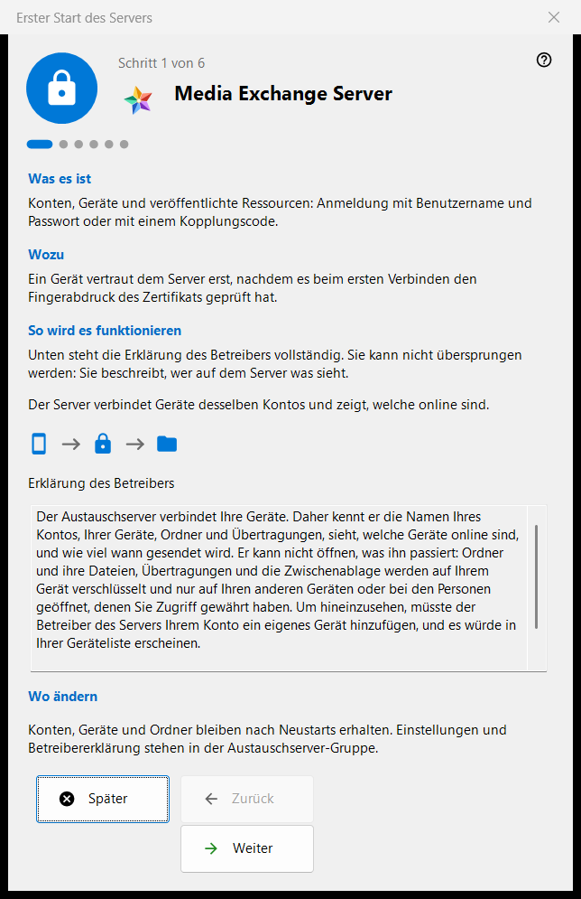
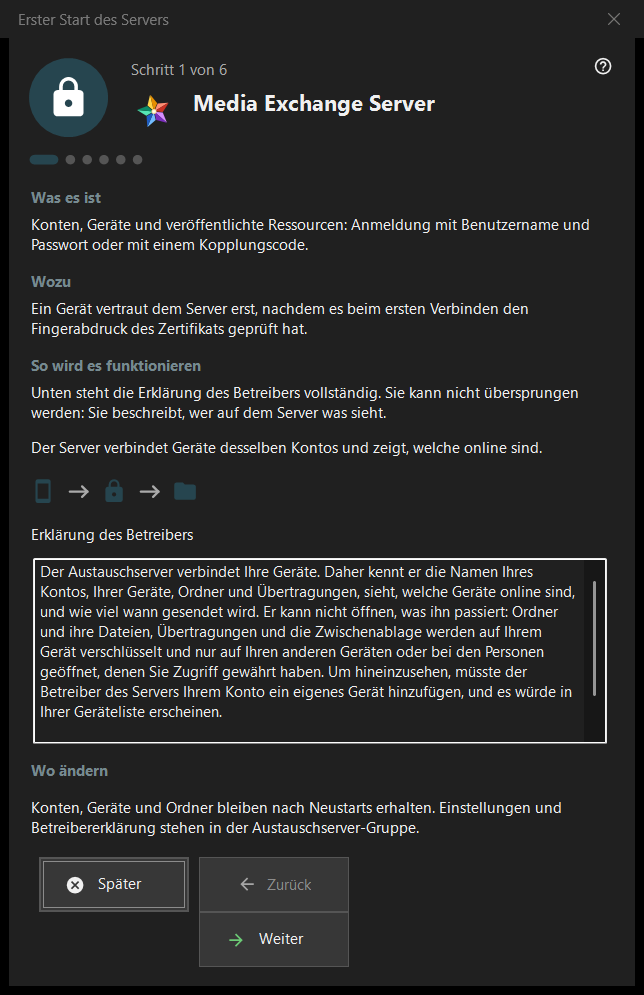

Erster Start des Servers
Verwendungszweck
Eine Anleitung für den ersten Start der Gruppe Austauschserver im Share Manager. Sie erklärt, was der Computer wird, zeigt die Betreibererklärung, legt die Ports, die Adresse für Clients und das erste Konto fest und endet mit dem Serverstatus. Sie öffnet sich nur, wenn der Austauschserver vorhanden und aktiviert ist.


In dieser Reihenfolge
- Lesen Sie auf der ersten Seite die Betreibererklärung.
- Prüfen Sie die Ports und die Firewall-Regel.
- Entscheiden Sie bei einer Server-Edition ohne Dienst über den Windows-Dienst.
- Tragen Sie die Adresse für Clients ein.
- Legen Sie das erste Konto an.
- Prüfen Sie den Fingerabdruck des Zertifikats und drücken Sie «Fertig».
Die Elemente
Seiten und Schaltflächen
Die Fußzeile zeigt «Schritt N von M»; «Zurück», «Weiter» und «Später» funktionieren wie in jedem Assistenten, und «Fertig» auf der letzten Seite öffnet die Gruppe Austauschserver des Managers. Eine Seite lässt sich ohne Änderungen überspringen: Der Server bleibt dann aus oder so, wie er war.
Betreibererklärung
Die vollständige Erklärung, wer auf dem Server was sieht. Sie lässt sich nicht überspringen. Der Server verbindet die Geräte eines Kontos und meldet, welche davon online sind.
Ports und Firewall
Ein Treffpunkt-Port für Geräte und ein Portbereich für Clients von Drittanbietern. Die Geräte müssen den Serverport kennen, deshalb gelten Änderungen nur für neue Codes. Die Firewall-Regel gehört zum Programm, daher braucht eine Portänderung keine neue Regel. Diese Werte liegen in der Gruppe Austauschserver.
Windows-Dienst
Wird nur auf einer Server-Edition angezeigt, auf der der Dienst noch nicht existiert. Ein Dienst hält den Server verfügbar, wenn niemand angemeldet ist. Das Kontrollkästchen merkt sich nur Ihre Zustimmung: Der Dienst wird erst nach dem ersten Konto mit einer einzigen Rechteabfrage registriert, vorher wird nichts installiert. «Als Dienst registrieren..» in der Gruppe Austauschserver macht dasselbe später.
Adresse für Clients
«Adresse für Clients (Host:Port):» ist das, womit andere Geräte diesen Computer erreichen. «Lokale Adresse vorschlagen» füllt das Feld nur auf Knopfdruck. Eine leere Adresse hält einen rein lokalen ersten Start gültig, verbirgt aber Übertragungen und Ordnerverbindungen vor anderen Geräten.
Erstes Konto
Das Konto, mit dem sich das erste Gerät anmeldet. Wählen Sie «Passwort erzeugen» oder «Eigenes Passwort eingeben»; «Diesen PC mit dem Konto verbinden» verbindet diesen Computer mit dem Konto. «Weiter» legt das Konto an, startet den Server und prüft das Zertifikat. Das Kennwort wird einmal im vorhandenen Dialog angezeigt und nicht auf diesem PC gespeichert. Ein Fehler nach dem Anlegen des Kontos entfernt es nicht wieder.
Server ist bereit
Die letzte Seite nennt, wo die Adresse, der Benutzername und der Fingerabdruck des Zertifikats festgehalten sind, und bietet «Fingerabdruck kopieren» und «Verbindungszeichenfolge und QR-Code..» an. Ein Gerät vertraut dem Server, nachdem es bei der ersten Verbindung den Fingerabdruck geprüft hat. Die Links «Telefon verbinden (Hilfe)» und «Ersten Ordner freigeben (Hilfe)» führen zu den passenden Hilfeseiten.
Managereinstellungen · SFTP-Freigabeeinstellungen · Einstellungen des Austauschservers